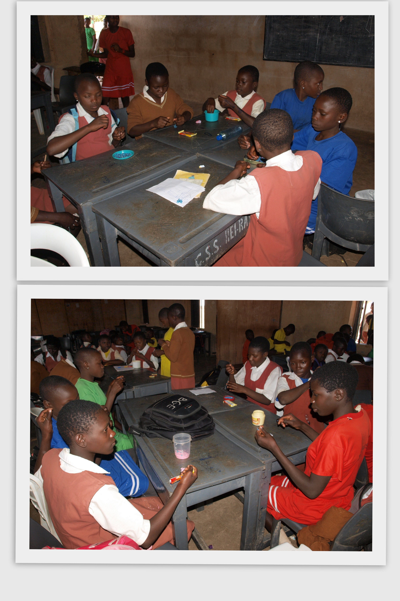
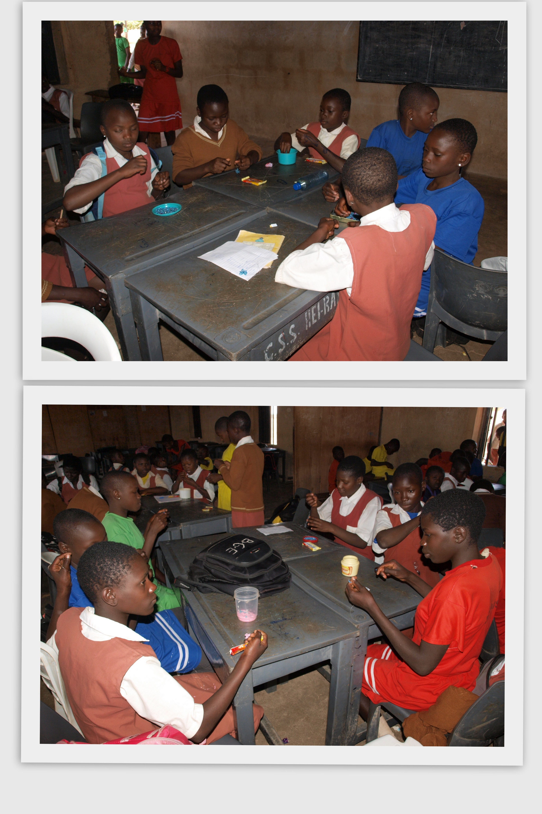

Overview of Our Work
 


Meet Joy Ejere Uche

I am the 6th child of a family of 10, born and raised up in Kaduna State but hail from Abia State. I studied Industrial Physics at Abia State University but found out that 2 things make me tick: "Technology and Education". I am pasionate about empowering adolescent girls with education, technical and vocational skills to eliminate gender disparities and economic dependence in the Nigerian society. In NYSC Orientation Camp Plateau State; I joined a group of Corp Members who would be posted to secondary schools to motivate adolescent girls in a Program organized by Mercy Corp called ENGINE -Educating Nigerian Girls In New Enterprises. After that, I volunteered for SOS Children's Villages Plateau State where I facilitated Sexual and Reproductive Health Education for a period of 4 months.I also volunteered for T.Y Danjuma Foundation and All Charity Children Foundation where i served as the Communication Officer for the "No Girl Child Left Behind Project" in August 2018.
When I relocated to Lagos, I decided to pursue my other dream of learning Website Development. In October, I registered for Code Lagos and I learnt the basics of JavaScript and Phython. I am currently part of the Nigerian Women Techster Program powered by Nigerian German Center, Microsoft Nigeria and Tech4dev. White Petals Initiative was born out of the need to prepare adolescent girls for real life and enabling them with tools to effect sustainable changes in the society.I seek to empower every Nigerian girl to make their dreams come true as my quota in implementing the Sustainable Development Goals. According to an International Labor Organization report, "Educating girls has proven to be one of the most important ways of breaking poverty cycles and is likely to have significant impacts on access to formal jobs in the longer term.”